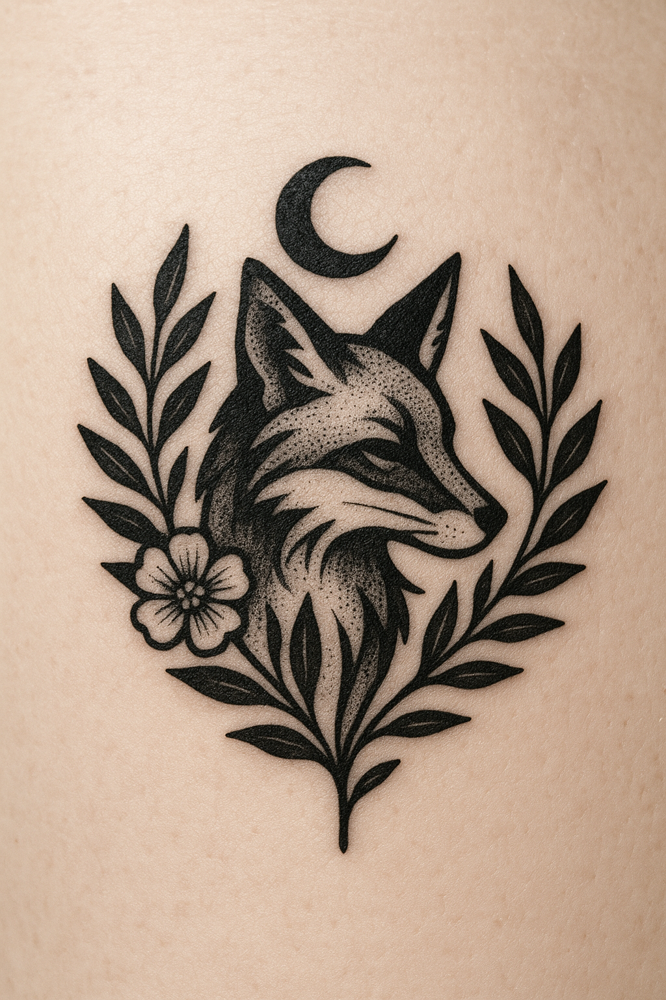
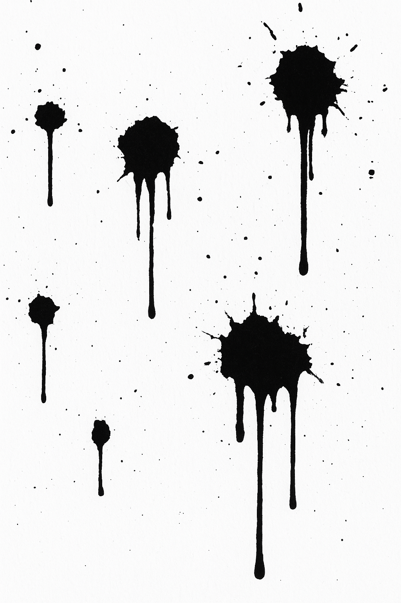
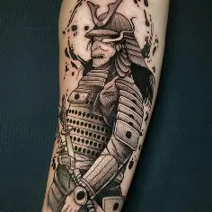
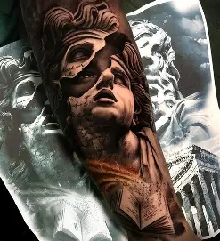

InkSoul Tattoo Studio
Inicio
Galería
Servicios
Sobre Nosotros
Nuestra Galería
Aquí puedes ver algunos de nuestros mejores trabajos:

Tatuaje de Lobo

Estilo Tradicional
Retrato Demonio
Tattoo Flor de loto

Estilo Japonés

Estilo Realismo